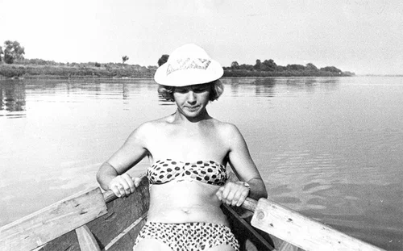
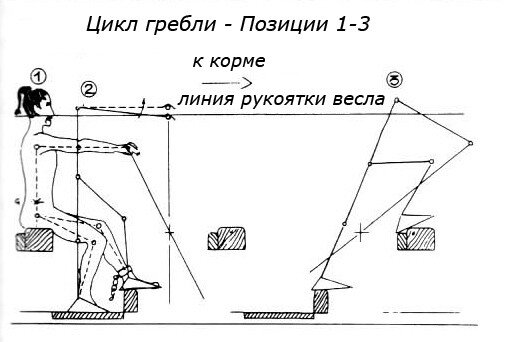
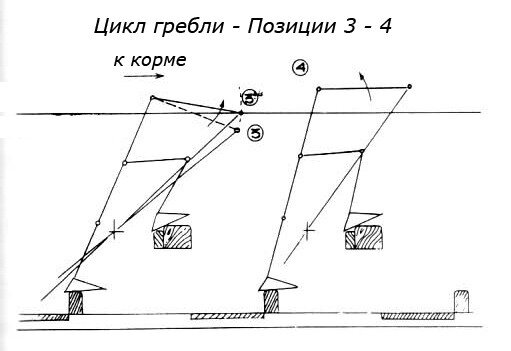
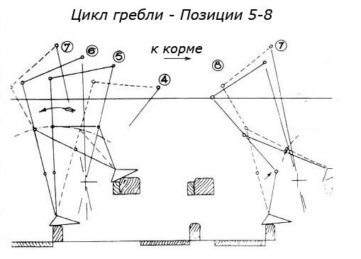
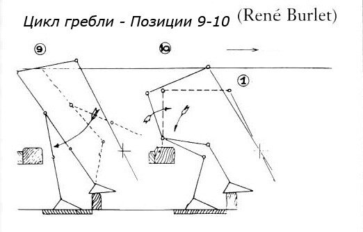

Изображение рабочего места гребца, которое мы поместили накануне, наводит на некоторые размышления. Независимо от того, была ли это стандартная галера, или флагманская типа Patronne или Réale, - на каждого гребца приходилось около 45 см (для сравнения, в метро на человека приходится около 40 см). А теперь давайте вообразим, что мы гребцы и попробуем имитировать греблю, держа руки на уровне груди. Сначала занос весла – руки вперед, потом гребок – руки на себя. Что у нас получается? Локти во время гребка мы выставляем в стороны, не так ли? Даже при гребле на простой рыбацкой лодке, как видно на этой старой фотографии, мы не прижимаем локти, а выставляем их в стороны.

Но и слева и справа от нас тоже находятся гребцы, которым тоже надо куда-то девать свои локти. Если мы хотим, чтобы гребцы не мешали друг другу, необходимо расстояние между гребцами увеличить как минимум до 85 см. Но это совсем невозможно, так как мы не имеем права увеличивать ширину военной галеры, если хотим сохранить ее боевые характеристики, прежде всего скорость. Значит гребцы должны всегда держать свои руки выпрямленными, не выставлять локти не только при заносе весла, что достаточно удобно, но и при гребке, что кажется нам неестественным. Более того, в этом случае мы не расправляем грудь, а значит ограничиваем дыхание, не позволяем мышцам расслабиться, т.е. в конечном счете – быстро устаем. И еще надо учесть, что грести приходится огромным веслом, длиной на стандартных галерах около 12 м и весом около 130 кг. На флагманских галерах эти цифры составляли 14 м и 160 кг соответственно. И хотя эти весла были сбалансированы (внутренняя часть весла была легче внешней лишь на 3 кг; эту цифру мы обсудим в дальнейшем), никто не отменял еще такого параметра, как момент инерции твердого тела, в нашем случае весла: в динамике, при изменении направлений движения этот параметр давал себя знать в полной мере.
Есть еще одна особенность такого размещения гребцов, как показано на ранее приведенной схеме. Банкеты находятся на высоте всего лишь около одного метра над поверхностью спокойного моря, а шпигаты – отверстия для стока воды с палубы, проделанные в ватервейсах (см. второй рисунок прошлого поста) – вообще на высоте не более 70 см. Мы уже говорили выше, что при волнении четыре балла по Бофорту высота волны составляет около 1,07 м. Таким образом, гребцы практически всегда были мокрыми, по крайней мере брызги соленой воды оставляли на их коже высохшую соль, а уже при небольшом волнении – гребцы находились по колено в воде, иногда нестерпимо холодной.
Так как же гребли на галерах системы a scaloccio? Командир эскадры галер Людовика XIV Баррас де ля Пенн, опытный командир с большим стажем, так описывал эту работу:
«Гребля на галерах состояла из трех этапов… Первый – встать со своей банки. Второй – толкать валек весла по направлению к корме; загребной при этом делал шаг и ставил правую ногу на упор (contre pedagne), (ноги остальных гребцов пока оставались на банкете), он вытягивал свои руки и тело по направлению к корме. Затем эту же операцию подхватывали остальные гребцы в большей или меньшей степени, в зависимости от их положения относительно загребного… На третьем этапе гребцы падали на банку, отклоняясь назад в максимально возможной степени, и, ПРОДОЛЖАЯ ДЕРЖАТЬ РУКИ ВЫТЯНУТЫМИ, они как бы описывали вальком весла круговую линию.»
В этом описании нас будет интересовать пока только одно выражение: ПРОДОЛЖАЯ ДЕРЖАТЬ РУКИ ВЫТЯНУТЫМИ.
Рассмотрим кинематику гребка, взяв за образец работу загребного на весле правого борта. Схематически гребец показан прямыми линиями, соединяющими точки запястья, плеча, бедра, колена и лодыжки. На стартовой позиции (№2) гребец стоит прямо, его руки вытянуты прямо перед собой, кисти опущены немного ниже уровня плеч, чтобы вытащить лопасть весла из воды. Левая нога, которая прикована к банке, находится на подножке, в то время как правая, свободная, остается на банкете (для гребцов левого борта все в зеркальном отражении: прикована правая нога и она находится на подножке). Удерживая руки ниже первоначального уровня плеч, чтобы удерживать лопасть весла над водой, загребной ставит правую ногу на упор, перенося на нее тяжесть тела, и занимает позицию №3.

Мы видели на схеме предыдущего поста, что этот шаг равносилен шагу через две ступеньки обычной лестницы. На следующем этапе загребной опускает лопасть весла в воду, постепенно поднимая руки (позиции 3а и 4).

Правая нога гребца напряжена как сжатая пружина, и он выпрямляет ее, примерно за 1 секунду отклоняя свое тело назад (позиции 5, 6 и 7), ПРОДОЛЖАЯ ДЕРЖАТЬ РУКИ ВЫТЯНУТЫМИ! Гребец как бы теряет равновесие и падает на банку, сгибая левую ногу (позиция 8).

Правая нога возвращается на банкет, в то время как левая, прикованная нога остается на подножке (позиции 9 и 10). В это же время гребец опускает руки, чтобы вынуть лопасть весла из воды. Цикл завершен.

Гребцов еще ждут тысячи таких циклов, а мы отдохнем до следующего раза. Поработали (вместе с нашим премьером) "как галерные рабы".